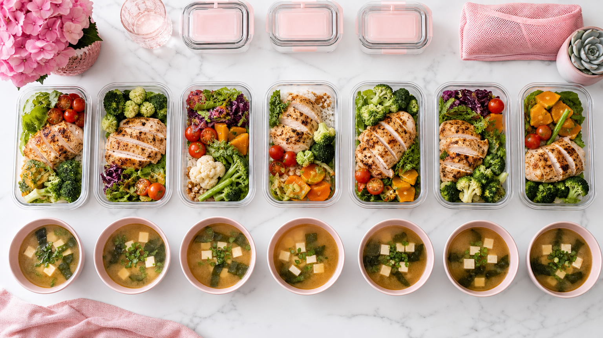

「毎日何を食べればいいかわからない」「献立を考えるのが面倒でダイエットが続かない」——そんな悩みを解決するために、朝・昼・晩の1週間分ダイエットレシピをまとめました。
すべて材料3〜5品・調理時間15分以内を目安にした簡単レシピです。特別な食材は不要なので、今日からすぐに始められます。
1週間ダイエット献立の基本ルール3つ
献立を組む前に、押さえておきたいポイントが3つあります。この3つを守るだけで、食事の質がぐっと上がります。
ダイエット献立を成功させる3つのポイント
1週間分ダイエットレシピ｜朝昼晩の献立一覧
以下の献立は1日あたりの目安カロリーを1,400〜1,600kcalに設定しています。個人差がありますので、体調に合わせて量を調整してください。
月曜日｜週のスタートをシンプルに
- 朝：ゆで卵2個＋無糖ヨーグルト100g＋バナナ半本
- 昼：鶏むね肉の塩麹焼き＋ご飯100g＋ミニトマト5個
- 晩：豆腐と野菜の味噌汁（豆腐100g・キャベツ・にんじん）＋納豆1パック
火曜日｜食物繊維を意識した献立
- 朝：オートミール40g（水で調理）＋冷凍ブルーベリー大さじ2
- 昼：サバ缶のサラダ丼（サバ缶1/2・レタス・きゅうり・ご飯100g）
- 晩：鶏ひき肉と豆腐のそぼろ炒め＋ほうれん草のおひたし
水曜日｜タンパク質をしっかり補給
- 朝：ギリシャヨーグルト150g＋ナッツ10粒＋はちみつ小さじ1
- 昼：サラダチキン（市販品）＋雑穀ご飯100g＋わかめスープ
- 晩：豚ヒレ肉のレモン蒸し（100g）＋ブロッコリー蒸し＋きのこスープ
木曜日｜発酵食品デーで腸活も
- 朝：納豆卵かけご飯（ご飯100g）＋小松菜の味噌汁
- 昼：キムチと豆腐の炒め物＋玄米おにぎり1個（100g）
- 晩：鮭のホイル焼き（鮭1切れ・玉ねぎ・しめじ）＋大根サラダ
金曜日｜週末前の調整デー
- 朝：スムージー（豆乳150ml・ほうれん草30g・バナナ半本）
- 昼：ツナと野菜のパスタ（全粒粉パスタ60g・ツナ缶1/2・ズッキーニ）
- 晩：鶏むね肉のトマト煮込み（鶏むね肉100g・トマト缶・玉ねぎ）
土曜日｜時間があるときに作り置きも
- 朝：スクランブルエッグ（卵2個）＋全粒粉トースト1枚＋サラダ
- 昼：豆腐チャンプルー（豆腐150g・卵1個・もやし・にんじん）
- 晩：鶏むね肉の蒸し鶏サラダ（棒棒鶏風）＋わかめと豆腐の味噌汁
日曜日｜週の締めくくりに体を整える
- 朝：オートミールパンケーキ（オートミール40g・卵1個・バナナ半本）
- 昼：根菜たっぷり豚汁＋ご飯100g
- 晩：タラのアクアパッツァ風（タラ1切れ・ミニトマト・あさり）＋蒸しブロッコリー
作り置きで時短する3ステップ
平日の調理負担を減らすために、週末の30〜60分を使った作り置きがおすすめです。
週末30分でできる！作り置き3ステップ
- 鶏むね肉200gをまとめて蒸し、食べやすい大きさに切って冷蔵保存（3〜4日持つ）
- ブロッコリー・にんじん・ほうれん草を下茹でして小分けにラップ保存
- ゆで卵を4〜5個まとめて作り、殻をむかずに冷蔵庫へ（5日以内に食べきる）
ダイエットレシピを続けるコツ
1週間の献立を完璧にこなそうとすると、かえって続きません。以下の3点を意識するだけで、無理なく継続できます。
- 外食・コンビニの日を週2日まで設けてOKにする（完璧主義をやめる）
- コンビニではサラダチキン・ゆで卵・カット野菜・無糖ヨーグルトを選ぶ
- 1食失敗しても次の食事でリセットする意識を持つ
食事管理の習慣づくりについては、ダイエット習慣に関する記事一覧もあわせて参考にしてみてください。
よくある質問
1週間のダイエット献立で何kg痩せられますか？
個人の体質・運動量・基礎代謝によって異なるため、具体的な数字をお約束することはできません。ただし、食事の質を整えることで体のむくみが取れ、1週間で体重計の数字が0.5〜1kg程度変化したという声も多くあります。まずは「食事を整える習慣をつくる」ことを目標にするのがおすすめです。
料理が苦手でも作れますか？
はい、今回紹介したレシピはすべて材料3〜5品・調理時間15分以内を目安にしています。「蒸す・茹でる・炒める」の基本調理のみで完成するものがほとんどです。包丁を使わずにできるメニュー（サバ缶サラダ丼・納豆卵かけご飯など）も複数含まれているので、料理初心者の方でも取り組みやすい内容です。
間食はしてもいいですか？
間食を完全に禁止する必要はありません。小腹が空いたときは、無糖ヨーグルト100g・ナッツ10粒・ゆで卵1個などタンパク質や食物繊維を含むものを選ぶと、血糖値の急上昇を抑えやすくなります。お菓子を完全にやめるよりも「何を食べるか」を意識するほうが長続きしやすいです。